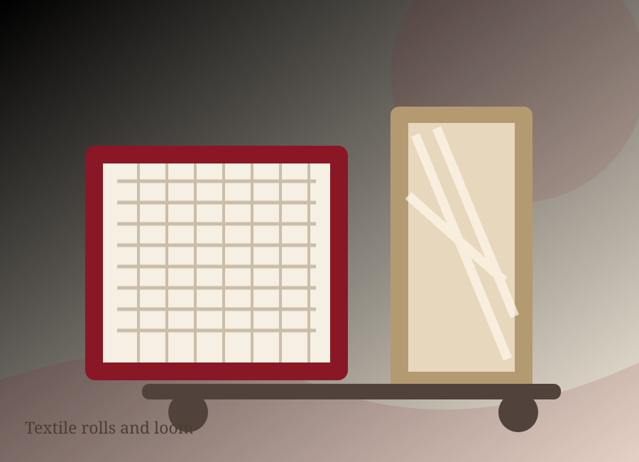
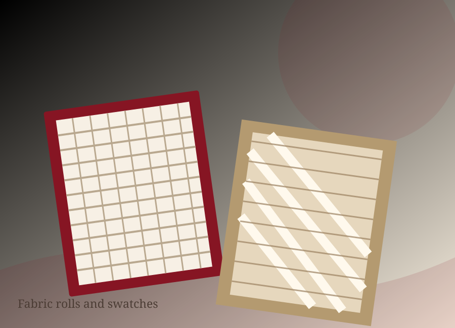
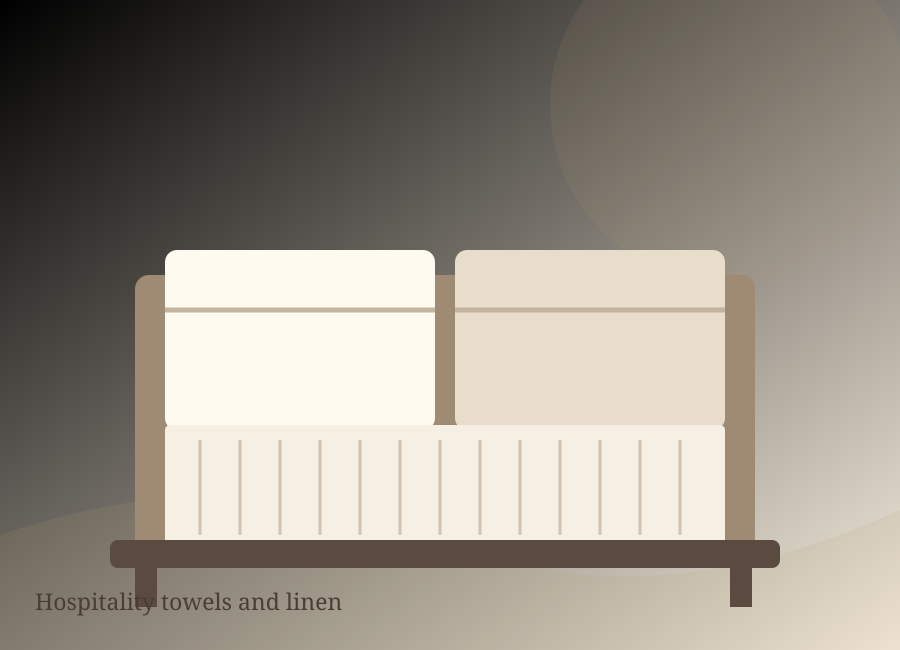
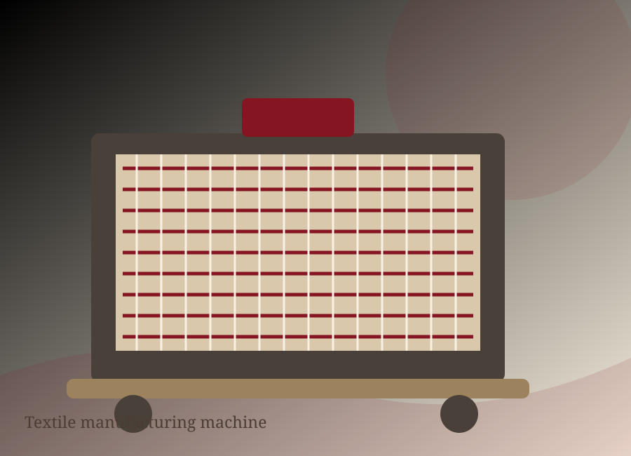

Since 1989
Built in Faisalabad, Pakistan, with a long-term family-business perspective.
Founded in Faisalabad in 1989, Bismillah Textiles has grown into a vertically integrated home textile manufacturer serving brands and retailers across six continents.

Explore 28 product ranges across home textiles, fabrics, hospitality linen and apparel fabrics. Final specifications depend on the project and confirmed company range.
Comfortable essentials and considered textile finishes.
Explore products ↗
Flexible textile options for varied applications.
Explore products ↗
Practical linen concepts for guest-focused environments.
Explore products ↗
See how connected textile operations, careful planning and the right equipment support a finished product.
Explore manufacturing ↗Strong textile partnerships depend on clear communication, repeatable processes and a shared understanding of requirements.
Built in Faisalabad, Pakistan, with a long-term family-business perspective.
A skilled team across integrated weaving, processing, made-up and support operations.
Serving textile brands and retailers worldwide through long-term partnerships.